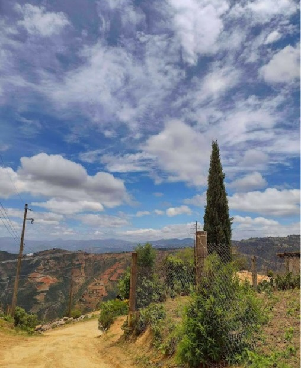

Conoce su Historia
1Historia
"Ocotlamanic": El término "Ocotlamanic" se compone de dos partes: "ocotl" y "manic". "Ocotl" se refiere al ocote, una especie de pino que es común en la región. "Manic" significa "donde hay" en el idioma náhuatl.
Por lo tanto, el nombre "Ocotlamanic" puede interpretarse como "donde hay cortadores de ocotes" o "donde se encuentran los ocotes". La historia de Ocotlamanic está estrechamente ligada a la relación de la comunidad con los recursos naturales, en particular con los ocotes.
Es probable que en el pasado, la localidad fuera conocida por la presencia de personas dedicadas a la extracción y utilización de los ocotes para diversos propósitos, como la construcción, la producción de resinas y otros usos tradicionales.
Galeria


Atractivos Turisticos:
